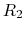
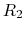
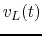

Instructions
In the circuit shown in the figure,
,  ,
,
 , , and the input voltage is
, , and the input voltage is
 V. Find the output voltage
V. Find the output voltage  across . (Hint: the circuit is linear, therefore the superposition
principal applies.)
across . (Hint: the circuit is linear, therefore the superposition
principal applies.)

Solution: Use superposition theorem.
The circuit in the figure below is composed of three resistors
 , and an ideal inductor
, and an ideal inductor  . The current source
is 6 mA. The switch is open when and the circuit has reached steady
state. The switch is then closed at
. The current source
is 6 mA. The switch is open when and the circuit has reached steady
state. The switch is then closed at  .
.
| time |
 | |||||||
where  and
and  and the voltage and current associated with
and the voltage and current associated with  for
for  , respectively. Their polarities and directions are shown in the figure.
, respectively. Their polarities and directions are shown in the figure.
Solution:
| time |
||||||||
| 4 | 4 | 2 | 2 | 0 | 4 | 2 | 2 | |
| 4 | 3 | 3 | 2 | 2 | 3 | 3 | 2 | |
| 6 | 3 | 3 | 0 | 0 | 3 | 3 | 0 |
In the circuit shown in the following figure, ,  ,
,
 , , , . The switch is in position a and
the circuit has reached steady state, until the moment
, , , . The switch is in position a and
the circuit has reached steady state, until the moment  when the switch is
turned to position b. Determine the voltage across
when the switch is
turned to position b. Determine the voltage across  as the response
of the system to the change of position of the switch.
as the response
of the system to the change of position of the switch.
Hint: is the superposition of and  responding to two processes
respectively:
(a) the voltage drop across
responding to two processes
respectively:
(a) the voltage drop across  due to the initial current through
due to the initial current through  alone after
the switch is turned from a to b; and (b) the voltage across
alone after
the switch is turned from a to b; and (b) the voltage across  as the complete
response to the current source
as the complete
response to the current source  alone after the switch turned from a to b.
alone after the switch turned from a to b.

Now solve the problem in the following steps by superposition theorem:
Solution: